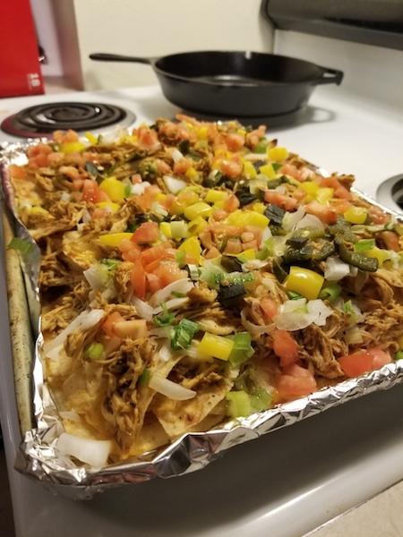

Chicken Nachos (Instant Pot)

Description
This is an excellent nacho recipe that utilizes the instant pot to make a perfectly moist and flavor packed tray of chicken nachos that will absolutely knock your socks off. There is a lot of variation to the recipe and you can apply your own artistic twists (or as my girlfriend calls them, "ingredients") to it, but the core process will remain the same each and every time. All you need to do is read through my tragic backstory and then read the recipe.
"Insert tragic backstory here"
Alright, without further ado, here is the recipe!!
Ingredients
- 1-1/2 pounds medium boneless, skinless chicken breasts
- 1 tablespoon of taco seasoning
- Honestly, you need enough taco seasoning to just coat the hell out of both sides of each piece of chicken. It's usually more than a tablespoon.
- 2 cups of mild salsa
- I personally use Xochitl Asada Verde Salsa , but you can use any salsa that you think would work well. Salsa Verde tends to work best, personally.
- 1/4 cup of freshly squeezed lime juice (The bottled stuff is fine too)
- 1/3 cup of chopped cilantro
- This is optional. Cilantro tastes like soap to me but people really seem to like it, so maybe I'm the weird one.
- Half a bag of tortilla chips
- Donkey chips are my go to chip for this, and I definitely use more than half a bag...
- They have a salt free option if you're interested in living past 50, but it isn't gonna hit the same.
- Seriously though they're so good.
- 2 cups of whatever shredded cheese flavor you like.
- Onions
- Roasted Poblano Pepper
- Roast this badboy in the oven at 400 degrees for like 15 minutes beforehand and then chop it up to use later.
- Green/Yellow/Orange Pepper
- Jalepeno
- Tomatoes
- Feel free to use other vegetables and otppings, but the above toppings are the most crucial
Directions